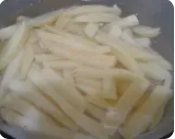
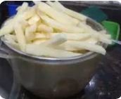
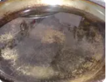
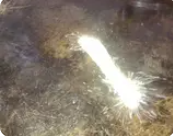
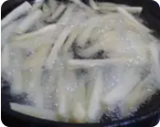
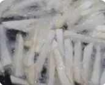
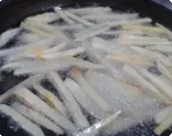
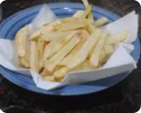

| Ingredientes |
|---|
| 2 papas grandes |
| Aceite suficiente como para cubrir una sarten |
Pelar, lavar y cortar las papas en bastones. Dejarlas un rato en un bol con agua para que larguen el almidón.
Colar el agua y dejarlas escurrir bien, que no queden mojadas.
TIP: podés terminar de secarlas sobre una servilleta limpia.
Llevar al fuego la sartén con aceite. OJO! No pongas aceite hasta arriba porque cuando ponés las papas se vuelca!
Cuando el aceite está bien caliente, agregar las papas. Como sé que el aceite está bien caliente? Ponés una sola papa y mirás. Si hace burbujitas con ganas, entonces podés poner el resto. Si no, esperá otro ratito y volvé a probar. Fijate en la foto: se ven las burbujitas en la punta de la papa.Parece una estrellita!
Agregar el resto de las papas. IMPORTANTISIMOOO! Las papas tienen que flotar cómodas en el aceite. Si son muchas papas no las amontones! Cocinalas por tandas, si no se pegotean.
TIP fundamental: NO las toques! Vencé la tentación de girarlas, revolverlas o lo que sea que se te está ocurriendo. Las papas, en su proceso, antes de dorarse se ablandan. Si las tocás, las rompés. Si las rompés, sueltan más almidón y quedan, no solo rotas, sino también pegoteadas. (si te pasa, no las tires, transformalas en tortilla!)
Cuando las papas se empiezan a dorar, las podés dar vuelta con ayuda de una espátula para que se terminen de hacer.Te vas a dar cuenta, además de por el color, poque movés despacito la sartén y las ves firmes. Mirá la foto: ves como se están dorando?
Cuando adquirieron un dorado parejo ya están.
Sácalas del aceite con una espumadera, o una espátula de alambre o cualquier cosa que te permita escurrir el exceso de aceite. Ponelas en un recipiente sobre servilletas de papel que van a terminar de absorber lo que les quedó de aceite. Salar y servir.
NOTA: las papas recién se salan cuando están hechas, para que no se ablanden!
Sugerencia: si las querés calentar, dales un toque en el horno. Yo (amante del microondas) no recomiendo calentarlas ahí. se ablandan y quedan aceitosas.A mi no me gustan como quedan.
No te desmoralices si no te salen de una. Seguí probando que le vas a encontrar la vuelta. Éxito!